Dynatrace OpenPipeline - Astronomy Shop Logs#
In this module we'll utilize Dynatrace OpenPipeline to process astronomy-shop application logs at ingest, in order to make them easier to analyze and leverage. The logs will be ingested by OpenTelemetry Collector, deployed on Kubernetes as part of the previous module. With OpenPipeline, the logs will be processed at ingest, to manipulate fields, extract metrics, and raise alert events in case of any issues.
The OpenTelemetry Collector deployed as a Daemonset is collecting Pod logs from the Node's filesystem and shipping them to Dynatrace. The application Pods from the Astronomy Shop application have been instrumented with the OpenTelemetry SDK. The OpenTelemetry SDK is configured to ship logs (,traces, and metrics) to Dynatrace via the OpenTelemetry Collector deployed as a Deployment (Gateway). Due to the differences in how these logs are collected, they do not contain the same metadata. While these logs contain a lot of useful information, they are missing valuable fields/attributes that will make them easier to analyze in context. These logs can be enriched at ingest, using OpenPipeline. Additionally, OpenPipeline allows us to process fields, extract new data types, manage permissions, and modify storage retention.
Goals:
- Add OpenTelemetry service name and namespace
- Enrich SDK logs with additional Kubernetes metadata
- Apply Dynatrace technology bundle (Java)
- Extract data: Payment transaction business event
- Extract metrics: Payment transaction amount
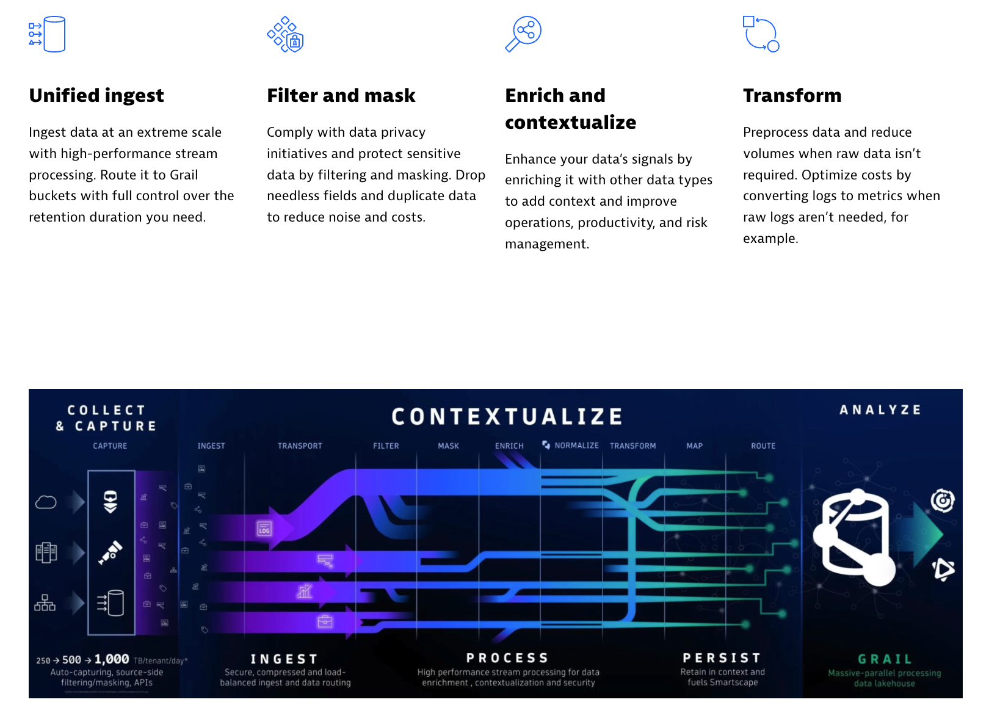
OpenPipeline is an architectural component of Dynatrace SaaS. It resides between the Dynatrace SaaS tenant and Grail data lakehouse. Logs (,traces, metrics, events, and more) are sent to the Dynatrace SaaS tenant and route through OpenPipeline where they are enriched, transformed, and contextualized prior to being stored in Grail.
Query Logs#
Query and discover the Astronomy Shop logs as they are ingested and stored in Dynatrace. Use Dynatrace Query Language (DQL) to transform the logs at query time and prepare for Dynatrace OpenPipeline configuration.
Import Notebook into Dynatrace
Download Astronomy Shop Logs Notebook
Astronomy Shop Logs - Ondemand Processing at Query Time (Notebook)
In OpenTelemetry, service.name and service.namespace are used to provide meaningful context about the services generating telemetry data:
service.name: This is the logical name of the service. It should be the same for all instances of a horizontally scaled service. For example, if you have a shopping cart service, you might name it shoppingcart.
service.namespace: This is used to group related services together. It helps distinguish a group of services that logically belong to the same system or team. For example, you might use Shop as the namespace for all services related to an online store.
These attributes help in organizing and identifying telemetry data, making it easier to monitor and troubleshoot services within a complex system.
The logs originating from the OpenTelemetry SDK contain both the service.name and service.namespace. However, the Pod logs which contain stdout and stderr messages from the containers - do not. In order to make it easier to analyze the log files and unify the telemetry, the service.name and service.namespace attributes should be added to the Pod logs with Dynatrace OpenPipeline.
OpenTelemetry Service Name#
Query the astronomy-shop logs fitered on isNull(service.name).
DQL: Before OpenPipeline and DQL Transformation
fetch logs
| filter matchesValue(k8s.namespace.name,"astronomy-shop") and matchesValue(telemetry.sdk.name,"opentelemetry")
| filter isNull(service.name) and isNotNull(app.label.component) and matchesValue(k8s.namespace.name,"astronomy-shop")
| filterOut matchesValue(k8s.container.name,"istio-proxy")
| sort timestamp desc
| limit 25
| fields timestamp, k8s.namespace.name, k8s.deployment.name, k8s.container.name, app.label.component, service.name, service.namespace
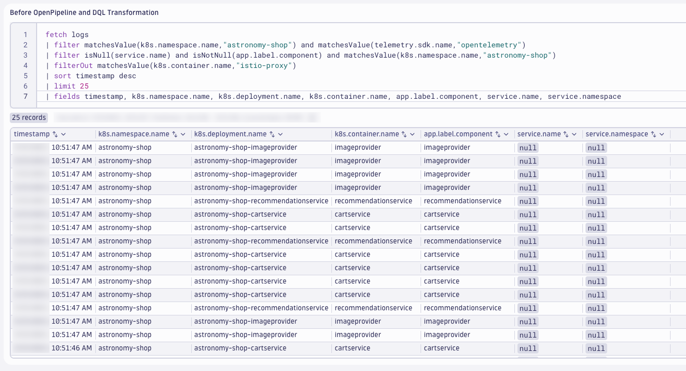
The value for service.name can be obtained from multiple different fields, but based on the application configuration - it is best to use the value from app.label.component.
Use DQL to transform the logs and apply the service.name value.
DQL: After DQL Transformation
fetch logs
| filter matchesValue(k8s.namespace.name,"astronomy-shop") and matchesValue(telemetry.sdk.name,"opentelemetry")
| filter isNotNull(app.label.component) and matchesValue(k8s.namespace.name,"astronomy-shop")
| filterOut matchesValue(k8s.container.name,"istio-proxy")
| sort timestamp desc
| limit 25
| fieldsAdd service.name = app.label.component
| fields timestamp, k8s.namespace.name, k8s.deployment.name, k8s.container.name, app.label.component, service.name, service.namespace
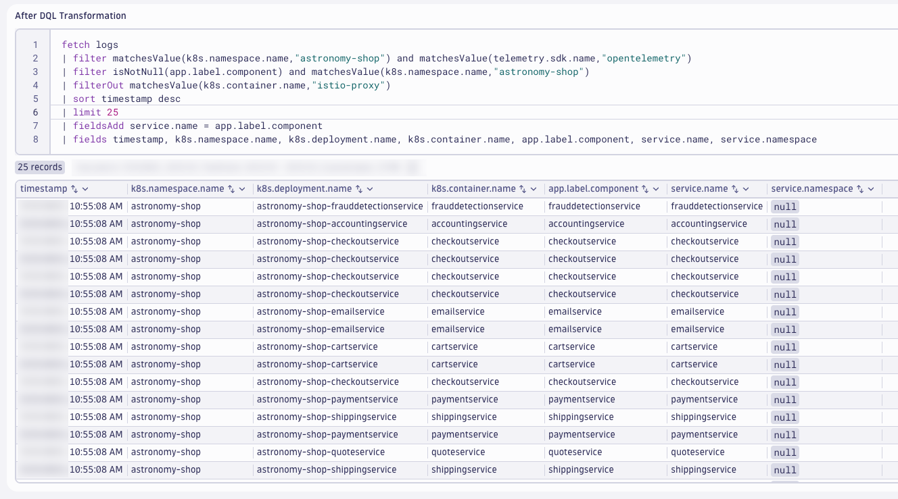
This modifies the log attributes at query time and helps us identify the processing rules for Dynatrace OpenPipeline. We'll validate the results after OpenPipeline, later.
OpenTelemetry Service Namespace#
Query the astronomy-shop logs fitered on isNull(service.namespace).
DQL: Before OpenPipeline and DQL Transformation
fetch logs
| filter isNull(service.namespace) and isNull(service.name) and isNotNull(app.annotation.service.namespace) and matchesValue(k8s.namespace.name,"astronomy-shop")
| filterOut matchesValue(k8s.container.name,"istio-proxy")
| sort timestamp desc
| limit 25
| fieldsAdd service.name = app.label.component
| fields timestamp, k8s.namespace.name, k8s.deployment.name, k8s.container.name, app.label.component, app.annotation.service.namespace, service.name, service.namespace
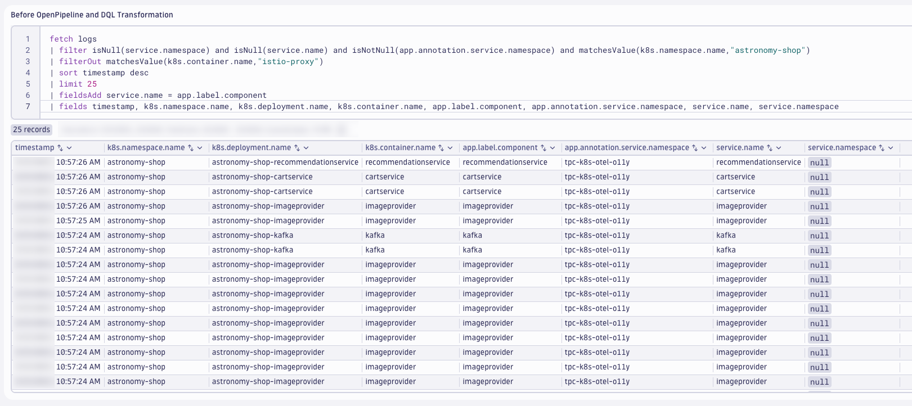
The Pods have been annotated with the service namespace. The k8sattributes processor has been configured to add this annotation as an attribute, called app.annotation.service.namespace. This field can be used to populate the service.namespace.
Use DQL to transform the logs and apply the service.namespace value.
DQL: After DQL Transformation
fetch logs
| filter isNull(service.namespace) and isNull(service.name) and isNotNull(app.annotation.service.namespace) and matchesValue(k8s.namespace.name,"astronomy-shop")
| filterOut matchesValue(k8s.container.name,"istio-proxy")
| sort timestamp desc
| limit 25
| fieldsAdd service.name = app.label.component
| fieldsAdd service.namespace = app.annotation.service.namespace
| fields timestamp, k8s.namespace.name, k8s.deployment.name, k8s.container.name, app.label.component, app.annotation.service.namespace, service.name, service.namespace

This modifies the log attributes at query time and helps us identify the processing rules for Dynatrace OpenPipeline. We'll validate the results after OpenPipeline, later.
OpenTelemetry SDK Logs#
The logs generated and exported by the OpenTelemetry SDK are missing Kubernetes attributes, or in some cases have the wrong values set. The OpenTelemetry SDK, unless specifically configured otherwise, is not aware of the Kubernetes context in which of the application runs. As a result, when the OpenTelemetry Collector that's embedded in astronomy-shop sends the logs to the Dynatrace OpenTelemtry Collector via OTLP, the Kubernetes attributes are populated with the Kubernetes context of the astronomy-shop-otelcol workload. This makes these attributes unreliable when analyzing logs. In order to make it easier to analyze the log files and unify the telemetry, the Kubernetes attributes should be correct for the SDK logs with Dynatrace OpenPipeline.
Query the astronomy-shop logs filtered on telemetry.sdk.language and astronomy-shop-otelcol.
DQL: Before OpenPipeline and DQL Transformation
fetch logs
| filter isNotNull(telemetry.sdk.language) and matchesValue(k8s.deployment.name,"astronomy-shop-otelcol") and isNotNull(service.name) and matchesValue(k8s.namespace.name,"astronomy-shop")
| sort timestamp desc
| limit 25
| fields timestamp, service.name, telemetry.sdk.language, k8s.namespace.name, k8s.deployment.name, k8s.pod.name, k8s.pod.uid, k8s.replicaset.name, k8s.node.name
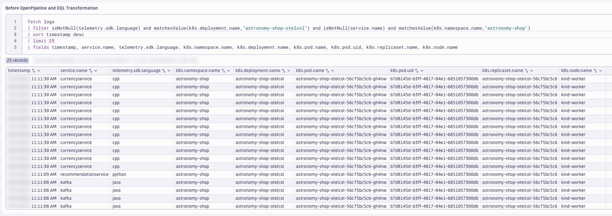
The k8s.namespace.name is correct, however the k8s.deployment.name, k8s.pod.name, k8s.pod.uid, k8s.replicaset.name, and k8s.node.name are incorrect. Since the k8s.deployment.name is based on the service.name, this field can be used to correct the k8s.deployment.name value. The other values can be set to null in order to avoid confusion with the astronomy-shop-otelcol workload.
Use DQL to transform the logs and set the k8s.deployment.name value while clearing the other fields.
DQL: After DQL Transformation
fetch logs
| filter isNotNull(telemetry.sdk.language) and matchesValue(k8s.deployment.name,"astronomy-shop-otelcol") and isNotNull(service.name) and matchesValue(k8s.namespace.name,"astronomy-shop")
| sort timestamp desc
| limit 25
| fieldsAdd k8s.deployment.name = concat("astronomy-shop-",service.name)
| fieldsAdd k8s.container.name = service.name
| fieldsAdd app.label.name = concat("astronomy-shop-",service.name)
| fieldsAdd app.label.component = service.name
| fieldsRemove k8s.pod.name, k8s.pod.uid, k8s.replicaset.name, k8s.node.name
| fields timestamp, service.name, telemetry.sdk.language, k8s.namespace.name, k8s.deployment.name, k8s.container.name, app.label.name, app.label.component
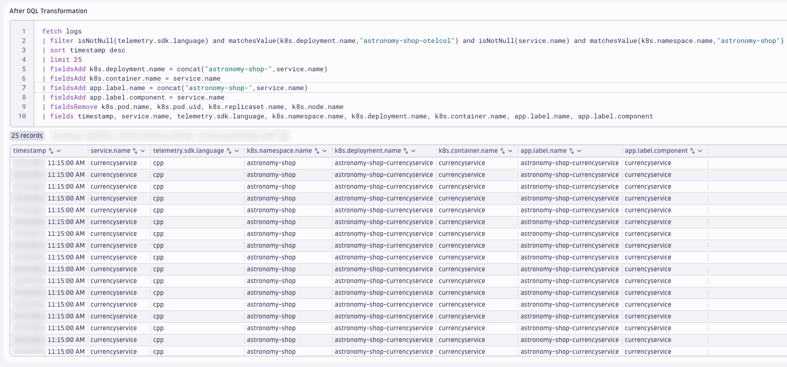
This modifies the log attributes at query time and helps us identify the processing rules for Dynatrace OpenPipeline. We'll validate the results after OpenPipeline, later.
Java Technology Bundle#
Many applications written in a specific programming language will utilize known logging frameworks that have standard patterns, fields, and syntax for log messages. For Java, these include frameworks such as Log4j, Logback, java.util.logging, etc. Dynatrace OpenPipeline has a wide variety of Technology Processor Bundles, which can be easily added to a Pipeline to help format, clean up, and optimize logs for analysis.
The Java technology processor bundle can be applied to the astronomy-shop logs that we know are originating from Java applications.
Query the astronomy-shop logs filtered on telemetry.sdk.language or the astronomy-shop-adservice Java app.
DQL: Before OpenPipeline and DQL Transformation
fetch logs
| filter (matchesValue(telemetry.sdk.language,"java", caseSensitive: false) or matchesValue(k8s.deployment.name,"astronomy-shop-adservice", caseSensitive:false)) and matchesValue(k8s.namespace.name,"astronomy-shop")
| filter matchesValue(k8s.deployment.name,"astronomy-shop-adservice", caseSensitive:false) or matchesValue(k8s.deployment.name,"astronomy-shop-kafka", caseSensitive:false)
| sort timestamp desc
| limit 15
| append [fetch logs
| filter matchesValue(telemetry.sdk.language,"java", caseSensitive: false)
| fieldsAdd k8s.deployment.name = concat(k8s.namespace.name,"-",service.name)
| sort timestamp desc
| limit 15]
| sort timestamp desc
| fields timestamp, k8s.namespace.name, k8s.deployment.name, telemetry.sdk.language, content
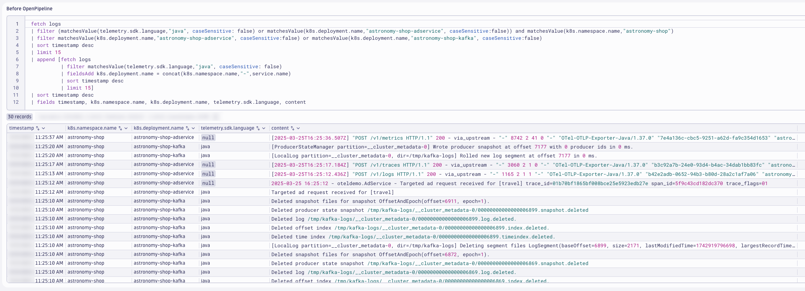
These are the logs that will be modified using the Java technology processor bundle within OpenPipeline. We'll validate the results after OpenPipeline, later.
PaymentService Transactions#
Most (if not all) applications and microservices drive business processes and outcomes. Details about the execution of these business processes is often written out to the logs by the application. Dynatrace OpenPipeline is able to extract this business-relevant information as a business event (bizevent).
Log to Business Event Documentation
DQL is fast and powerful, allowing us to query log files and summarize the data to generate timeseries for dashboards, alerts, AI-driven forecasting and more. While it's handy to generate timeseries metric data from logs when we didn't know we would need it, it's better to generate timeseries metric data from logs at ingest for the use cases that we know ahead of time. Dynatrace OpenPipeline is able to extract metric data from logs on ingest.
The paymentservice component of astronomy-shop generates a log record every time it processes a payment transaction successfully. This information is nested within a JSON structured log record, including the transactionId, amount, cardType, and currencyCode. By parsing these relevant logs for the fields we need, Dynatrace OpenPipeline can be used to generate a payment transaction business event and a payment transaction amount metric on log record ingest.
Query the astronomy-shop logs filtered on the paymentservice logs with a trace_id attribute.
DQL: Before OpenPipeline and DQL Transformation
fetch logs
| filter matchesValue(k8s.namespace.name,"astronomy-shop") and matchesValue(k8s.container.name,"paymentservice") and isNotNull(trace_id)
| sort timestamp desc
| limit 25
| fields timestamp, content, k8s.container.name, trace_id

The content field is structured JSON. The parse command can be used to parse the JSON content and add the fields we need for our use case.
{
"level": "30",
"time": "1742928663142",
"pid": "24",
"hostname": "astronomy-shop-paymentservice-6fb4c9ff9b-t45xn",
"trace_id": "f3c6358fe776c7053d0fd2dab7bc470f",
"span_id": "880430306f41a648",
"trace_flags": "01",
"transactionId": "c54b6b4c-ebf1-4191-af21-5f583d0d0c87",
"cardType": "visa",
"lastFourDigits": "5647",
"amount": {
"units": {
"low": "37548",
"high": "0",
"unsigned": false
},
"nanos": "749999995",
"currencyCode": "USD"
},
"msg": "Transaction complete."
}
Use DQL to transform the logs and parse the payment fields from the JSON content.
DQL: After DQL Transformation
fetch logs
| filter matchesValue(k8s.namespace.name,"astronomy-shop") and matchesValue(k8s.container.name,"paymentservice") and isNotNull(trace_id)
| sort timestamp desc
| limit 25
| fields timestamp, content, k8s.container.name, trace_id
| parse content, "JSON:json_content"
| fieldsAdd app.payment.msg = json_content[`msg`]
| filter app.payment.msg == "Transaction complete."
| fieldsAdd app.payment.cardType = json_content[`cardType`]
| fieldsAdd app.payment.amount = json_content[`amount`][`units`][`low`]
| fieldsAdd app.payment.currencyCode = json_content[`amount`][`currencyCode`]
| fieldsAdd app.payment.transactionId = json_content[`transactionId`]
| fieldsRemove json_content

This modifies the log attributes at query time and helps us identify the processing rules for Dynatrace OpenPipeline. We'll validate the results after OpenPipeline, next.
Configure OpenPipeline#
Configure Dynatrace OpenPipeline for Astronomy Shop logs.
View Images
If the images are too small and the text is difficult to read, right-click and open the image in a new tab.
Save Often
Consider saving your pipeline configuration often to avoid losing any changes.
In your Dynatrace tenant, launch the OpenPipeline app. Begin by selecting Logs from the left-hand menu of telemetry types. Then choose Pipelines. Click on + Pipeline to add a new pipeline.

Name the new pipeline, Astronomy Shop OpenTelemetry Logs. Click on the Processing tab to begin adding Processor rules.
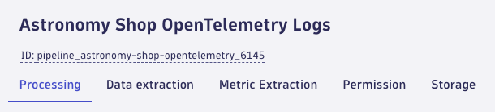
OpenTelemetry Service Name#
Add a processor to set the OpenTelemetry Service Name. Click on + Processor to add a new processor.
Type:
DQL
Name:
OpenTelemetry Service Name
Matching condition:
isNull(service.name) and isNotNull(app.label.component) and matchesValue(k8s.namespace.name,"astronomy-shop")
Processor definition:
fieldsAdd service.name = app.label.component
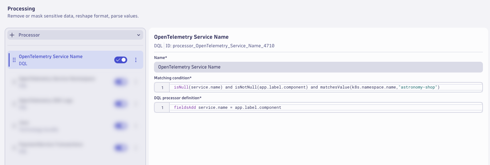
OpenTelemetry Service Namespace#
Add a processor to set the OpenTelemetry Service Namespace. Click on + Processor to add a new processor.
Type:
DQL
Name:
OpenTelemetry Service Namespace
Matching condition:
isNull(service.namespace) and isNotNull(service.name) and isNotNull(app.annotation.service.namespace) and matchesValue(k8s.namespace.name,"astronomy-shop")
Processor definition:
fieldsAdd service.namespace = app.annotation.service.namespace
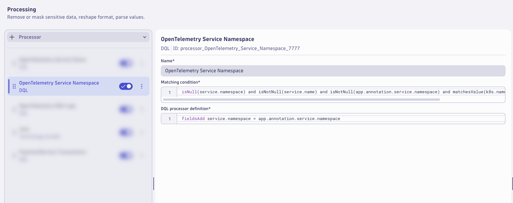
OpenTelemetry SDK Logs#
Add a processor to transform the OpenTelemetry SDK Logs. Click on + Processor to add a new processor.
Type:
DQL
Name:
OpenTelemetry SDK Logs
Matching condition:
isNotNull(telemetry.sdk.language) and matchesValue(k8s.deployment.name,"astronomy-shop-otelcol") and isNotNull(service.name) and matchesValue(k8s.namespace.name,"astronomy-shop")
Processor definition:
fieldsAdd k8s.deployment.name = concat("astronomy-shop-",service.name)
| fieldsAdd k8s.container.name = service.name
| fieldsAdd app.label.name = concat("astronomy-shop-",service.name)
| fieldsAdd app.label.component = service.name
| fieldsRemove k8s.pod.name, k8s.pod.uid, k8s.replicaset.name, k8s.node.name

Java Technology Bundle#
Add a processor to enrich the Java logs using the Java Technology Bundle. Click on + Processor to add a new processor.
Type:
Technology Bundle > Java
Matching condition:
(matchesValue(telemetry.sdk.language,"java", caseSensitive: false) or matchesValue(k8s.deployment.name,"astronomy-shop-adservice", caseSensitive:false)) and matchesValue(k8s.namespace.name,"astronomy-shop")
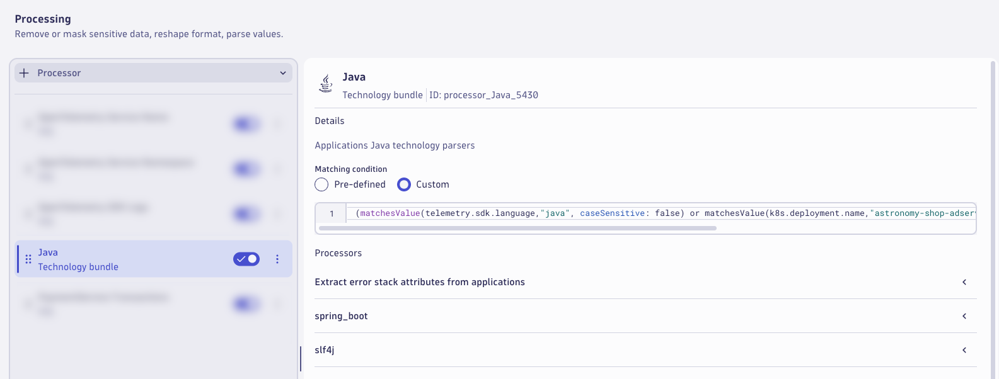
PaymentService Transactions#
Add a processor to parse the PaymentService Transaction logs. Click on + Processor to add a new processor.
Type:
DQL
Name:
PaymentService Transactions
Matching condition:
matchesValue(service.name,"paymentservice") and matchesValue(k8s.container.name,"paymentservice") and isNotNull(trace_id)
Processor definition:
parse content, "JSON:json_content"
| fieldsAdd app.payment.msg = json_content[`msg`]
| fieldsAdd app.payment.cardType = json_content[`cardType`]
| fieldsAdd app.payment.amount = json_content[`amount`][`units`][`low`]
| fieldsAdd app.payment.currencyCode = json_content[`amount`][`currencyCode`]
| fieldsAdd app.payment.transactionId = json_content[`transactionId`]
| fieldsRemove json_content

Save Often
Consider saving your pipeline configuration often to avoid losing any changes.
PaymentService Transaction BizEvent#
Switch to the Data extraction tab.
Add a processor to extract a Business Event. Click on + Processor to add a new processor.
Type:
Business Event
Name:
PaymentService Transaction
Matching condition:
matchesValue(k8s.container.name,"paymentservice") and isNotNull(app.payment.cardType) and isNotNull(app.payment.amount) and isNotNull(app.payment.currencyCode) and isNotNull(app.payment.transactionId)
Event type:
Static String : astronomy-shop.app.payment.complete
Event provider:
Static String: astronomy-shop.opentelemetry
Field Extraction:
| Fields |
|---|
| app.payment.msg |
| app.payment.cardType |
| app.payment.amount |
| app.payment.currencyCode |
| app.payment.transactionid |
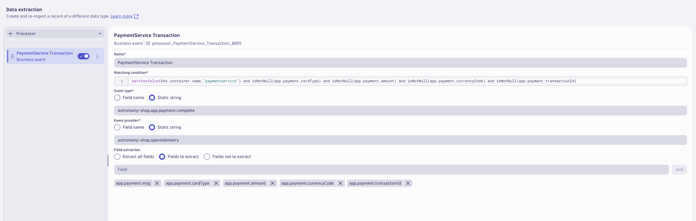
Save Often
Consider saving your pipeline configuration often to avoid losing any changes.
PaymentService Transaction Metric#
Switch to the Metric Extraction tab.
Add a processor to set extract a metric from the PaymentService Transaction logs. Click on + Processor to add a new processor.
Type:
Value metric
Name:
PaymentService Transaction
Matching condition:
matchesValue(k8s.container.name,"paymentservice") and isNotNull(app.payment.cardType) and isNotNull(app.payment.amount) and isNotNull(app.payment.currencyCode) and isNotNull(app.payment.transactionId)
Field extraction:
app.payment.amount
Metric key:
otel.astronomy-shop.app.payment.amount
Dimensions:
| Field | Dimension |
|---|---|
| app.payment.cardType | cardType |
| app.payment.currencyCode | currencyCode |
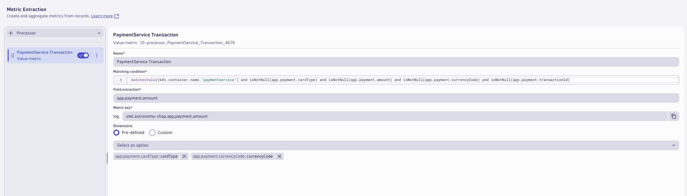
The pipeline is now configured, click on Save to save the pipeline configuration.

Dynamic Route#
A pipeline will not have any effect unless logs are configured to be routed to the pipeline. With dynamic routing, data is routed based on a matching condition. The matching condition is a DQL query that defines the data set you want to route.
Click on Dynamic Routing to configure a route to the target pipeline. Click on + Dynamic Route to add a new route.

Configure the Dynamic Route to use the Astronomy Shop OpenTelemetry Logs pipeline.
Name:
Astronomy Shop OpenTelemetry Logs
Matching condition:
matchesValue(k8s.namespace.name,"astronomy-shop") and matchesValue(telemetry.sdk.name,"opentelemetry") and isNull(event.domain)
Pipeline:
Astronomy Shop OpenTelemetry Logs
Click Add to add the route.

Validate that the route is enabled in the Status column. Click on Save to save the dynamic route table configuration.
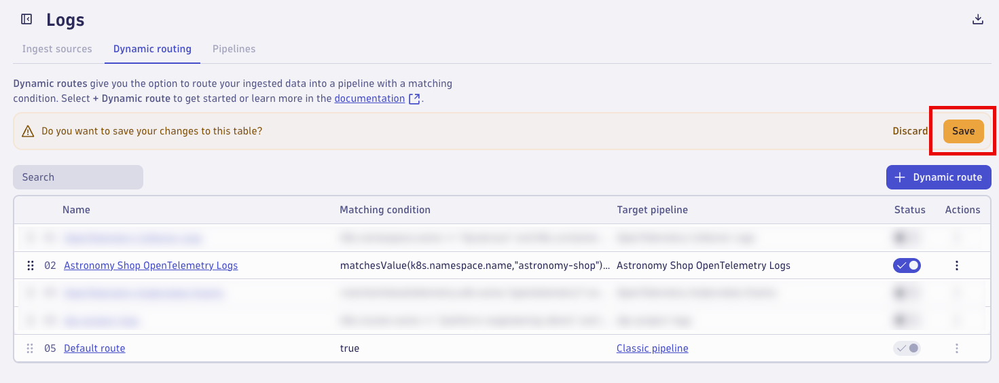
Allow astronomy-shop to generate new log data that will be routed through the new pipeline (3-5 minutes).
Analyze Results#
Analyze the Astronomy Shop logs after Dynatrace OpenPipeline processing.
Analyze the results in Dynatrace (Notebook)#
Use the Notebook from earlier to analyze the results.
OpenTelemetry Service Name
Query the astronomy-shop logs fitered on isNotNull(service.name) to analyze with OpenTelemetry Service Name.
DQL: After OpenPipeline
fetch logs
| filter matchesValue(k8s.namespace.name,"astronomy-shop") and matchesValue(telemetry.sdk.name,"opentelemetry")
| filter isNotNull(service.name) and isNotNull(app.label.component) and matchesValue(k8s.namespace.name,"astronomy-shop")
| filterOut matchesValue(k8s.container.name,"istio-proxy")
| sort timestamp desc
| limit 25
| fields timestamp, k8s.namespace.name, k8s.deployment.name, k8s.container.name, app.label.component, service.name, service.namespace
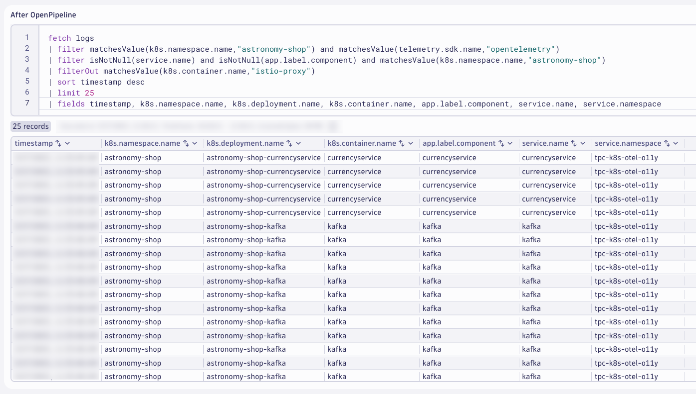
OpenTelemetry Service Namespace
Query the astronomy-shop logs fitered on isNotNull(service.namespace) to analyze with OpenTelemetry Service Namespace.
DQL: After OpenPipeline
fetch logs
| filter isNotNull(service.namespace) and isNotNull(service.name) and isNotNull(app.annotation.service.namespace) and matchesValue(k8s.namespace.name,"astronomy-shop")
| filterOut matchesValue(k8s.container.name,"istio-proxy")
| sort timestamp desc
| limit 25
| fields timestamp, k8s.namespace.name, k8s.deployment.name, k8s.container.name, app.label.component, app.annotation.service.namespace, service.name, service.namespace
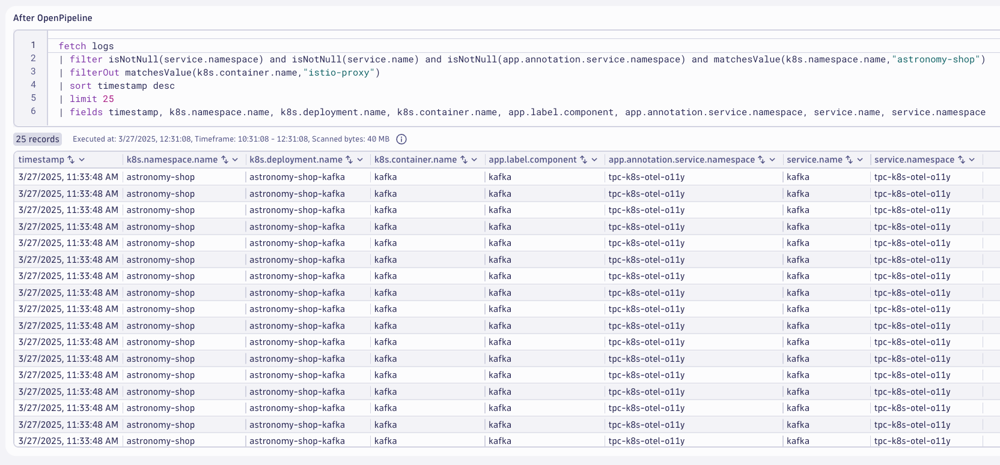
OpenTelemetry SDK Logs
Query the astronomy-shop logs fitered on telemetry.sdk.language to analyze with OpenTelemetry SDK Logs.
DQL: After OpenPipeline
fetch logs
| filter isNotNull(telemetry.sdk.language) and isNotNull(service.name) and matchesValue(k8s.namespace.name,"astronomy-shop")
| sort timestamp desc
| limit 25
| fields timestamp, service.name, telemetry.sdk.language, k8s.namespace.name, k8s.deployment.name, k8s.container.name, app.label.name, app.label.component, k8s.pod.name, k8s.pod.uid, k8s.replicaset.name, k8s.node.name

Java Technology Bundle
Query the astronomy-shop logs fitered on telemetry.sdk.language == "java" to analyze with Java Technology Bundle logs.
DQL: After OpenPipeline
fetch logs
| filter (matchesValue(telemetry.sdk.language,"java", caseSensitive: false) or matchesValue(k8s.deployment.name,"astronomy-shop-adservice", caseSensitive:false)) and matchesValue(k8s.namespace.name,"astronomy-shop")
| filterOut matchesValue(k8s.container.name,"istio-proxy")
| sort timestamp desc
| limit 50
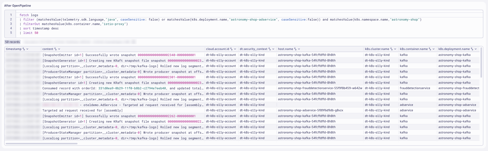
You likely won't notice anything different about these logs. This exercise was meant to show you how to use the technology bundles.
PaymentService Transactions
Query the astronomy-shop logs fitered on service.name == "paymentservice" to analyze with PaymentService logs.
DQL: After OpenPipeline
fetch logs
| filter matchesValue(k8s.namespace.name,"astronomy-shop") and isNotNull(service.name)
| filterOut event.domain == "k8s"
| filter matchesValue(service.name,"paymentservice") and matchesValue(k8s.container.name,"paymentservice") and isNotNull(trace_id)
| sort timestamp desc
| limit 25
| fields timestamp, content, k8s.container.name, trace_id, app.payment.msg, app.payment.cardType, app.payment.amount, app.payment.currencyCode, app.payment.transactionId
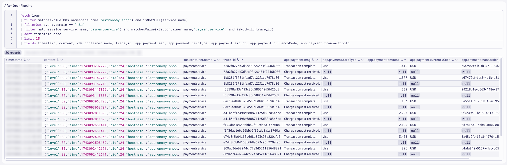
Query the PaymentService Business Events.
DQL: PaymentService Transaction Business Events
fetch bizevents
| filter matchesValue(event.type,"astronomy-shop.app.payment.complete")
| sort timestamp desc
| limit 10
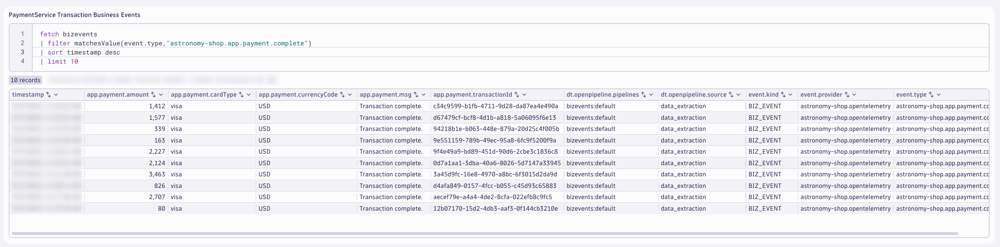
Query the PaymentService Metric.
DQL: PaymentService Transaction Extracted Metric
timeseries sum(`log.otel.astronomy-shop.app.payment.amount`), by: { currencyCode, cardType }
| fieldsAdd value.A = arrayAvg(`sum(\`log.otel.astronomy-shop.app.payment.amount\`)`)
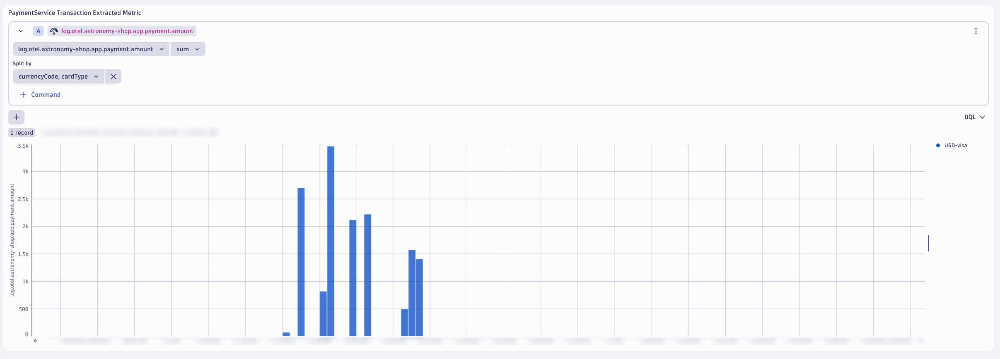
Wrap Up#
What You Learned Today
By completing this module, you've successfully set up Dynatrace OpenPipeline pipelines to process the Astronomy Shop logs at ingest.
- Astronomy Shop logs
- Add OpenTelemetry service name and namespace fields to unify telemetry signals and enable out-of-the-box analysis
- Enrich SDK logs with additional Kubernetes metadata to unify telemetry signals and analyze Kubernetes context
- Apply Dynatrace technology bundle (Java) to transform logs based on known Java standards and frameworks
- Extract data: Payment transaction business event to measure business outcomes and link them to system health
- Extract metrics: Payment transaction amount to measure business KPIs and link them to system health